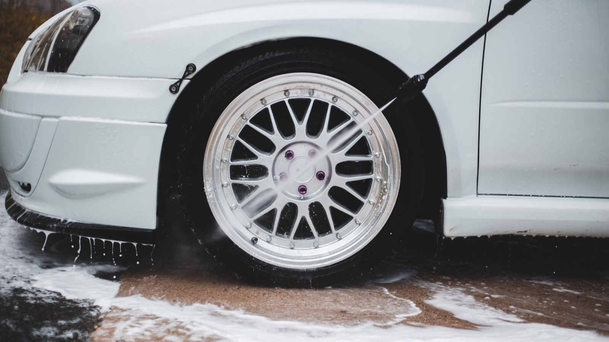
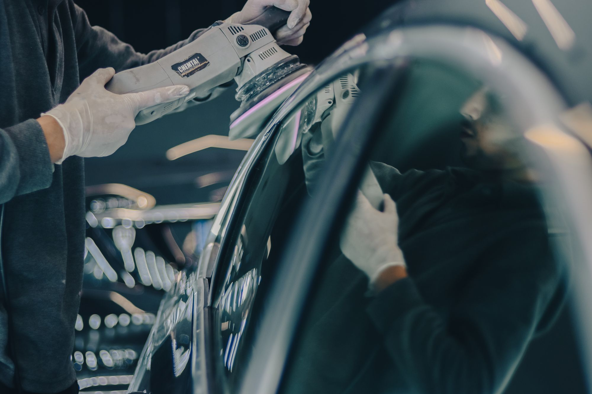
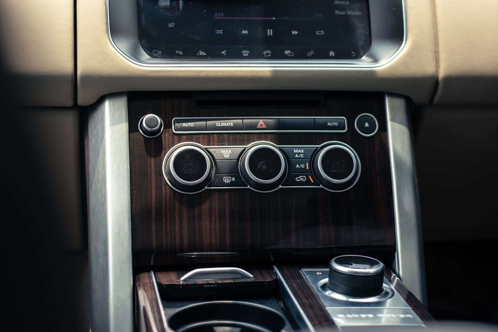
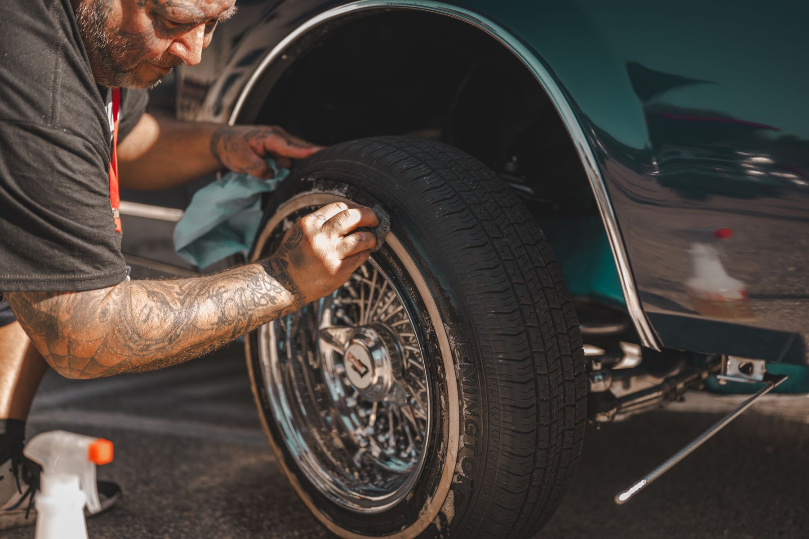
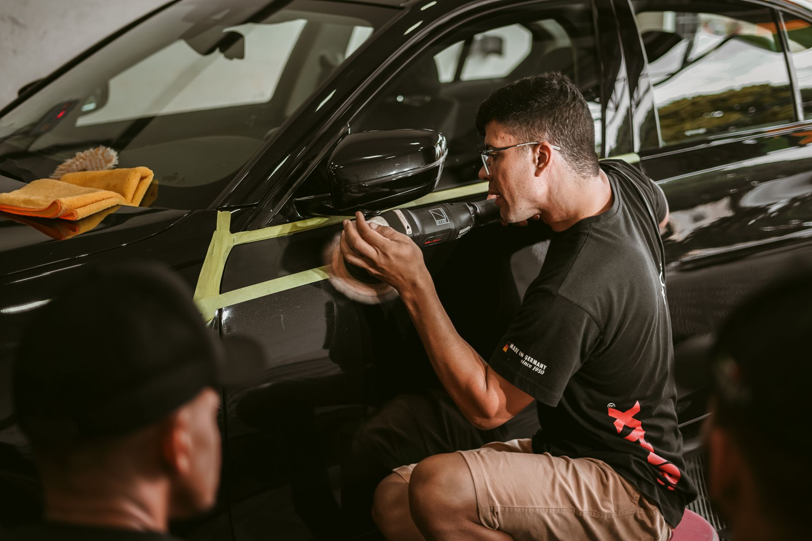

CABIN / 01
Interior reset
Attention for seating areas, carpets, touchpoints, trim, and the small spaces that collect daily use.
Houston, Texas · Car detailing
Ride Loom Mobile Car Detailing Houston focuses on the cabin, body, and finish—the parts you see, touch, and notice every time you drive.
Three service lenses
Every vehicle arrives with a different mix of daily dust, interior buildup, and finish concerns. The first step is understanding what yours needs—not forcing it into a one-size description.
Attention for seating areas, carpets, touchpoints, trim, and the small spaces that collect daily use.

BODY / 02Paint-safe cleaning with attention to body panels, glass, wheels, tires, and the lines where residue gathers.

FINISH / 03A closer look at dullness, surface clarity, and the finishing steps that can bring back a cleaner reflection.
Start with your vehicle
The inspection path
A practical sequence keeps the work focused and gives the finish a natural stopping point: when the vehicle has been reviewed as a whole.
Start with the vehicle’s visible condition and the areas that matter most to you.
Work through the cabin and exterior in logical zones so details are not skipped.
Return to edges, touchpoints, trim, glass, and finish areas that need closer attention.
Look over the full vehicle and confirm the visible result before wrapping up.
Observable workmanship
Good detailing is visible in the transitions: where carpet meets trim, where a wheel meets the tire, and where clear glass changes the whole cabin.
Creases, gaps, and borders receive the same visual check as broad surfaces.
Controls, handles, consoles, and entry points shape the everyday result.
Glass, trim, wheels, tires, and panels should read as one cared-for vehicle.



Licensed stock photography illustrates service details and is not presented as completed Ride Loom work.
Before you book
Have a condition-specific question? Call or choose a time online and describe what you want addressed.
Ask about interior cleaning, exterior detailing, wheel and tire attention, or finish-focused care. Vehicle condition varies, so confirm the right scope when you call or book.
No. Start with what you notice about the vehicle and what you want improved. The appropriate service scope can be discussed from there.
Timing depends on vehicle size, condition, and the agreed scope. Ask about timing for your specific vehicle when you call or book online.
Call Ride Loom at Phone pending or use the online appointment link. Both paths let you start with your vehicle and what it needs.
Houston, Texas
Call Ride Loom Mobile Car Detailing Houston or choose an appointment time online.